Chess.dev Studio
Les échecs en quelques chiffres
0
Millions de joueurs
0
Grands Maîtres
0
Pays membres de la FIDE
10120
Positions possibles
Un jeu de stratégie millénaire
Les échecs : un jeu de stratégie universel
Les échecs sont l'un des jeux de stratégie les plus anciens et les plus populaires au monde. Ils opposent deux joueurs sur un échiquier composé de 64 cases alternant les couleurs noire et blanche, disposées en un carré de 8 rangées et 8 colonnes. Chaque joueur commence la partie avec 16 pièces : un roi, une reine, deux tours, deux fous, deux cavaliers et huit pions, soit un total de 32 pièces sur l'échiquier.
L'objectif principal est de mettre le roi adverse en échec et mat. On parle d'« échec » lorsque le roi est directement menacé par une pièce ennemie. Il y a « échec et mat » lorsque le roi est attaqué et qu'aucun coup légal ne permet de le protéger, de capturer la pièce menaçante ou de s'échapper. La partie est alors terminée et le joueur qui a réalisé l'échec et mat remporte la victoire.
📜 La grande histoire des échecs
Depuis plus de quinze siècles, les échecs traversent les civilisations, évoluent avec les peuples et accompagnent les plus grands génies de l'histoire. Voici les grandes étapes qui ont façonné le jeu que nous connaissons aujourd'hui.
🇮🇳 Le Chaturanga
En Inde apparaît le Chaturanga, considéré comme l'ancêtre direct des échecs modernes. Les quatre corps de l'armée y sont représentés : infanterie, cavalerie, éléphants et chars.
🇮🇷 Le Chatrang
Le jeu arrive en Perse où il devient le Chatrang. Les règles évoluent progressivement avant de se diffuser dans tout le Moyen-Orient.
☪️ Le Shatranj
Les savants arabes développent le Shatranj, écrivent les premiers ouvrages stratégiques et popularisent les échecs dans une grande partie du monde.
👑 Les règles modernes
La Dame devient la pièce la plus puissante, les parties deviennent plus rapides et les échecs prennent leur forme actuelle.
🏆 Premier Champion du Monde
Wilhelm Steinitz devient officiellement le premier Champion du Monde de l'histoire des échecs.
🇺🇸 Fischer contre Spassky
Le « Match du siècle » oppose Bobby Fischer à Boris Spassky pendant la Guerre froide et passionne des centaines de millions de personnes.
🤖 Deep Blue
Pour la première fois, un ordinateur bat le Champion du Monde Garry Kasparov lors d'un match officiel.
♟️ Magnus Carlsen
Magnus Carlsen devient Champion du Monde et domine les échecs pendant une décennie.
🌟 Gukesh
À seulement 18 ans, Gukesh devient le plus jeune Champion du Monde de l'histoire.
🌍 Les grandes nations des échecs
Depuis plusieurs siècles, certaines nations dominent les compétitions internationales et forment les plus grands champions. Découvrez les pays qui ont marqué l'histoire des échecs.
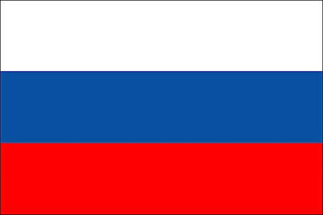
🇷🇺 Russie
Légende mondialeGrands Maîtres : 250+
Champions célèbres : Kasparov, Karpov, Alekhine, Botvinnik.

🇮🇳 Inde
Très forte nationGrands Maîtres : 85+
Champions célèbres : Anand, Gukesh, Praggnanandhaa.
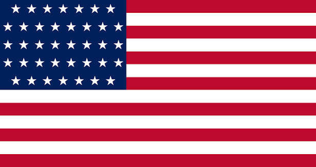
🇺🇸 États-Unis
Très forte nationGrands Maîtres : 100+
Champions célèbres : Fischer, Nakamura, Caruana.
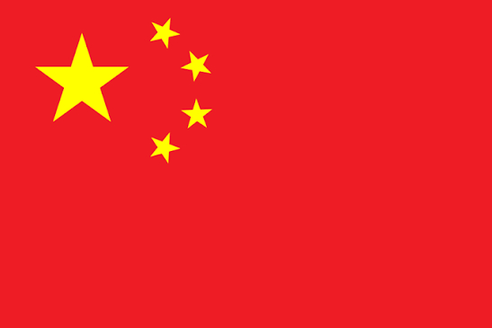
🇨🇳 Chine
Nation historiqueGrands Maîtres : 50+
Champions célèbres : Ding Liren, Hou Yifan, Wei Yi.

🇫🇷 France
Nation émergenteGrands Maîtres : 40+
Champions célèbres : Firouzja, Vachier-Lagrave.
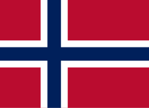
🇳🇴 Norvège
Nation émergenteGrands Maîtres : 20+
Champion : Magnus Carlsen.
♟️📜 Les origines des échecs
Les échecs trouvent leur origine en Inde, il y a environ 1 500 ans, où un jeu appelé Chaturanga était pratiqué. Ce jeu représentait les différentes unités de l'armée : l'infanterie, la cavalerie, les éléphants et les chars. Au fil des siècles, il s'est répandu en Perse, où il a pris le nom de Shatranj, avant d'être introduit dans le monde arabe puis en Europe au Moyen Âge.
À partir du XVe siècle, les règles modernes se mettent progressivement en place. La reine devient la pièce la plus puissante, les déplacements sont modifiés et les parties deviennent plus dynamiques. Depuis lors, les échecs connaissent un succès mondial et sont aujourd'hui pratiqués par des millions de personnes de tous âges.
Les règles du jeu
Une partie d'échecs commence toujours avec les Blancs, qui jouent le premier coup. Les joueurs jouent ensuite à tour de rôle jusqu'à la fin de la partie.
Chaque pièce possède un déplacement particulier :
- Le roi se déplace d'une seule case dans toutes les directions.
- La reine est la pièce la plus puissante : elle peut se déplacer d'autant de cases qu'elle le souhaite, horizontalement, verticalement ou en diagonale.
- La tour se déplace uniquement horizontalement ou verticalement sur autant de cases que possible.
- Le fou se déplace en diagonale sans limitation de distance.
- Le cavalier effectue un déplacement en forme de « L » : deux cases dans une direction puis une case perpendiculairement. C'est la seule pièce capable de sauter par-dessus les autres.
- Le pion avance d'une case vers l'avant, ou de deux cases lors de son premier déplacement s'il le souhaite. En revanche, il capture les pièces adverses en diagonale. Lorsqu'un pion atteint la dernière rangée de l'échiquier, il peut être promu en reine, tour, fou ou cavalier.
Certaines règles particulières rendent le jeu encore plus intéressant :
- Le roque permet de déplacer simultanément le roi et une tour afin de mieux protéger le roi.
- La prise en passant est une capture spéciale entre deux pions dans une situation précise.
- La promotion du pion offre un avantage considérable en transformant un pion en une pièce plus puissante.
Comment se termine une partie ?
Une partie d'échecs peut se terminer de plusieurs façons :
- par un échec et mat, lorsque le roi ne peut plus échapper à une attaque ;
- par l'abandon d'un joueur ;
- par un match nul, lorsque aucun joueur ne peut gagner ou lorsque les deux joueurs l'acceptent ;
- par pat, lorsque le joueur qui doit jouer ne possède aucun coup légal alors que son roi n'est pas en échec ;
- par un manque de matériel, lorsqu'aucun des deux joueurs ne possède suffisamment de pièces pour réaliser un échec et mat.
🏆 Les compétitions d'échecs
Les échecs sont organisés à tous les niveaux : dans les écoles, les clubs, les compétitions nationales et les tournois internationaux.
La compétition la plus prestigieuse est le Championnat du monde d'échecs, organisé par la Fédération Internationale des Échecs (FIDE). Les joueurs les plus forts obtiennent le prestigieux titre de Grand Maître International (GMI), qui représente le plus haut niveau dans ce sport.
Le classement des joueurs est établi grâce au classement Elo, un système qui mesure la force de chaque joueur en fonction de ses résultats contre d'autres adversaires.
💰 Valeur des pièces
| Pièce | Valeur | Déplacement |
|---|---|---|
| 👑 Roi | ∞ | 1 case |
| 👸 Dame | 9 | Toutes directions |
| 🏰 Tour | 5 | Horizontal/Vertical |
| ⛪ Fou | 3 | Diagonale |
| 🐴 Cavalier | 3 | En L |
| ♟️ Pion | 1 | Avant |
Les principales ouvertures
Les ouvertures constituent les premiers coups d'une partie d'échecs. Elles permettent de développer rapidement les pièces, de contrôler le centre de l'échiquier et de préparer les attaques du milieu de partie. Certaines ouvertures sont très agressives, tandis que d'autres privilégient la solidité et la stratégie à long terme.
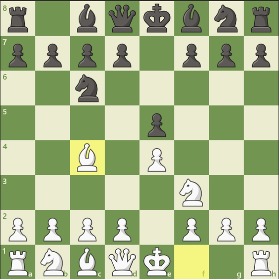
♙ Italienne
📈 ⭐⭐⭐⭐⭐
⚔️ Offensif
L'ouverture Italienne apparaît après 1.e4 e5 2.Cf3 Cc6 3.Fc4. Elle est l'une des plus anciennes ouvertures connues et développe rapidement les pièces avec une pression sur le pion f7.
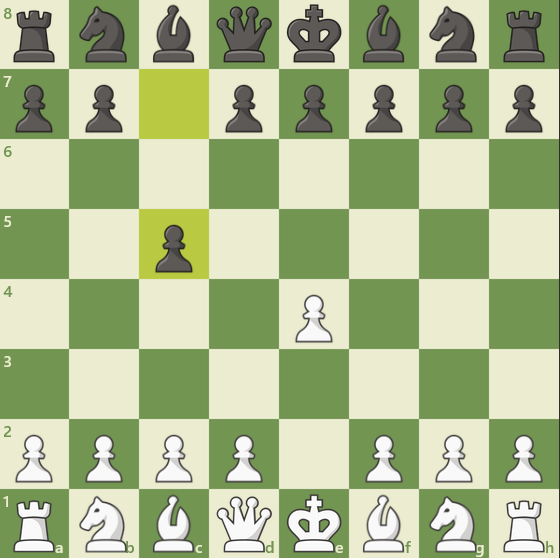
♞ Sicilienne
📈 ⭐⭐⭐⭐⭐
⚔️ Dynamique
La Défense Sicilienne débute par 1.e4 c5. C'est la réponse la plus populaire à 1.e4 au plus haut niveau, menant à des positions très complexes et tactiques.
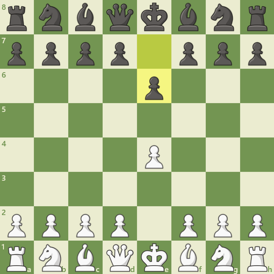
♟ Française
📈 ⭐⭐⭐⭐
⚔️ Solide
La Défense Française commence par 1.e4 e6. Elle donne naissance à des positions solides où la stratégie et la compréhension des structures de pions jouent un rôle essentiel.
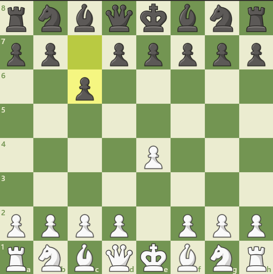
♜ Caro-Kann
📈 ⭐⭐⭐⭐
⚔️ Stratégique
La Défense Caro-Kann apparaît après 1.e4 c6. Elle est réputée pour sa grande solidité et sa résistance avec peu de faiblesses.
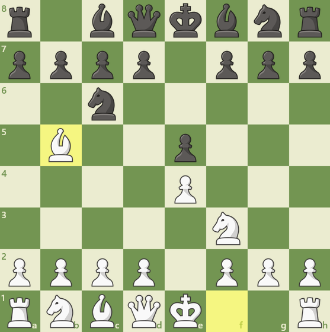
♝ Espagnole
📈 ⭐⭐⭐⭐⭐
⚔️ Riche
L'ouverture Espagnole (Ruy López) débute par 1.e4 e5 2.Cf3 Cc6 3.Fb5. Elle est considérée comme l'une des plus riches stratégiquement.
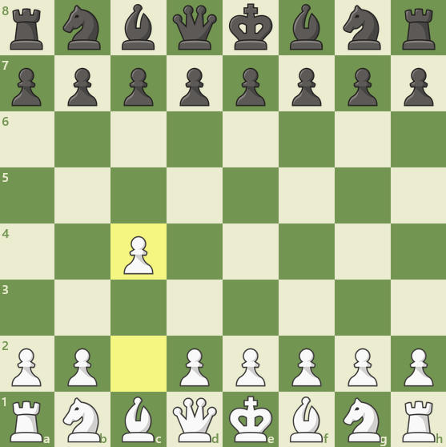
♘ Anglaise
📈 ⭐⭐⭐⭐
⚔️ Flexible
L'ouverture Anglaise commence par 1.c4. Elle permet de transposer vers de nombreuses autres ouvertures avec une grande variété de plans.
♙ L'ouverture Italienne
L'ouverture Italienne apparaît après les coups 1.e4 e5 2.Cf3 Cc6 3.Fc4. Elle est l'une des plus anciennes ouvertures connues. Son objectif est de développer rapidement les pièces tout en mettant une pression immédiate sur le pion f7, considéré comme le point faible du camp noir. Cette ouverture conduit souvent à des parties ouvertes et tactiques, idéales pour les débutants comme pour les grands maîtres.
📈 Popularité : ⭐⭐⭐⭐⭐ (Très populaire)
⭐ Difficulté : ⭐⭐☆☆☆ (Facile)
⚔️ Style : Offensif, développement rapide et jeu tactique.
👑 Joueurs célèbres : Paul Morphy, Bobby Fischer, Magnus Carlsen.
♞ La Défense Sicilienne
La Défense Sicilienne débute par les coups 1.e4 c5. C'est la réponse la plus populaire à 1.e4 au plus haut niveau. Les Noirs acceptent de ne pas occuper immédiatement le centre afin de contre-attaquer plus tard. Cette ouverture mène souvent à des positions très complexes, riches en combinaisons tactiques. De nombreux champions du monde, comme Garry Kasparov ou Magnus Carlsen, l'ont utilisée avec succès.
📈 Popularité : ⭐⭐⭐⭐⭐ (L'une des défenses les plus jouées)
⭐ Difficulté : ⭐⭐⭐⭐⭐ (Très difficile)
⚔️ Style : Très offensif, contre-attaque et jeu dynamique.
👑 Joueurs célèbres : Garry Kasparov, Magnus Carlsen, Bobby Fischer, Hikaru Nakamura.
♟ La Défense Française
La Défense Française commence par 1.e4 e6. Les Noirs préparent la poussée ...d5 afin de contester le centre blanc. Cette ouverture donne souvent naissance à des positions solides où la stratégie, la patience et la compréhension des structures de pions jouent un rôle essentiel. Elle est appréciée des joueurs recherchant une défense fiable.
📈 Popularité : ⭐⭐⭐⭐☆
⭐ Difficulté : ⭐⭐⭐☆☆
⚔️ Style : Défensif et positionnel.
👑 Joueurs célèbres : Viktor Korchnoï, Ulf Andersson, Alireza Firouzja.
♜ La Défense Caro-Kann
La Défense Caro-Kann apparaît après 1.e4 c6. Elle est réputée pour sa grande solidité et sa résistance. Les Noirs obtiennent généralement une position équilibrée avec peu de faiblesses. Cette ouverture est souvent choisie par les joueurs qui aiment les parties calmes et techniques où chaque erreur peut avoir de lourdes conséquences.
📈 Popularité : ⭐⭐⭐⭐☆
⭐ Difficulté : ⭐⭐☆☆☆
⚔️ Style : Solide, défensif et stratégique.
👑 Joueurs célèbres : Anatoli Karpov, Viswanathan Anand, Fabiano Caruana.
♕ Le Gambit Dame
Le Gambit Dame commence par 1.d4 d5 2.c4. Les Blancs proposent temporairement un pion afin de prendre le contrôle du centre. Contrairement à ce que son nom pourrait laisser penser, ce pion est rarement sacrifié définitivement. Cette ouverture est célèbre pour ses positions stratégiques profondes et a été popularisée auprès du grand public grâce à la série Le Jeu de la Dame.
📈 Popularité : ⭐⭐⭐⭐⭐
⭐ Difficulté : ⭐⭐⭐⭐☆
⚔️ Style : Positionnel, contrôle du centre.
👑 Joueurs célèbres : José Raúl Capablanca, Anatoli Karpov, Magnus Carlsen.
♝ L'ouverture Espagnole
Également appelée Ruy López, cette ouverture débute par 1.e4 e5 2.Cf3 Cc6 3.Fb5. Le fou attaque indirectement le cavalier qui protège le pion central e5. L'ouverture Espagnole est considérée comme l'une des plus riches stratégiquement. Elle est jouée depuis plus de quatre siècles et reste très présente dans les championnats du monde.
📈 Popularité : ⭐⭐⭐⭐⭐
⭐ Difficulté : ⭐⭐⭐⭐☆
⚔️ Style : Positionnel avec possibilités tactiques.
👑 Joueurs célèbres : Magnus Carlsen, Vladimir Kramnik, Bobby Fischer.
♘ L'ouverture Anglaise
L'ouverture Anglaise commence par 1.c4. Les Blancs contrôlent le centre sans y placer immédiatement un pion. Cette approche flexible permet de transposer vers de nombreuses autres ouvertures et offre une grande variété de plans stratégiques. Elle est particulièrement appréciée des joueurs positionnels.
📈 Popularité : ⭐⭐⭐⭐☆
⭐ Difficulté : ⭐⭐⭐☆☆
⚔️ Style : Flexible et stratégique.
👑 Joueurs célèbres : Mikhaïl Botvinnik, Levon Aronian, Magnus Carlsen.
♛ La Défense Nimzo-Indienne
La Défense Nimzo-Indienne survient après 1.d4 Cf6 2.c4 e6 3.Cc3 Fb4. Les Noirs développent rapidement leurs pièces et exercent une pression sur le cavalier blanc. Cette ouverture est réputée pour son équilibre entre tactique et stratégie. De nombreux grands maîtres la considèrent comme l'une des défenses les plus solides contre 1.d4.
📈 Popularité : ⭐⭐⭐⭐☆
⭐ Difficulté : ⭐⭐⭐⭐⭐
⚔️ Style : Positionnel et très riche stratégiquement.
👑 Joueurs célèbres : Tigran Petrossian, Vladimir Kramnik, Viswanathan Anand.
♚ Quelle ouverture choisir ?
Il n'existe pas de meilleure ouverture universelle. Le choix dépend du style de jeu de chaque joueur. Les amateurs d'attaque préfèrent souvent la Défense Sicilienne ou l'Italienne, tandis que ceux qui recherchent des positions solides choisissent la Caro-Kann ou la Défense Française. Les grands maîtres maîtrisent généralement plusieurs ouvertures afin de s'adapter à leurs adversaires et de varier leurs plans de jeu.
Les plus grands champions
🏆 Hall of Fame des Champions du Monde
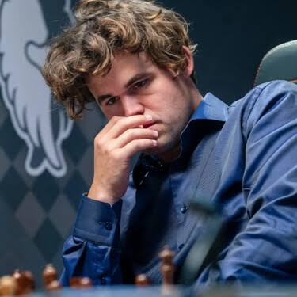
Magnus Carlsen
🇳🇴 Norvège
Champion du mondeElo : 2882
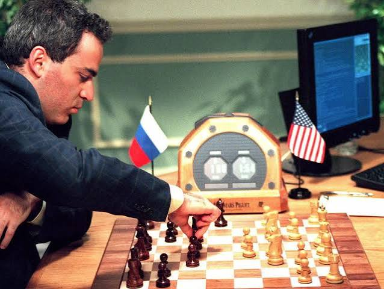
Garry Kasparov
🇷🇺 Russie
Champion du mondeElo : 2851
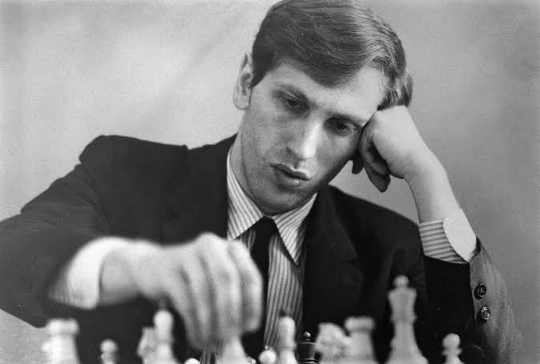
Bobby Fischer
🇺🇸 États-Unis
Champion du mondeElo : 2785
- Garry Kasparov a dominé les échecs mondiaux pendant près de vingt ans grâce à son style offensif et à sa préparation exceptionnelle.
- Bobby Fischer a marqué l'histoire en remportant le championnat du monde en 1972 contre Boris Spassky.
- Anatoli Karpov est célèbre pour son jeu très précis et sa maîtrise stratégique.
- Magnus Carlsen, champion du monde de 2013 à 2023, est considéré comme l'un des meilleurs joueurs de tous les temps.
- Gukesh Dommaraju, devenu champion du monde en 2024 à seulement 18 ans, représente la nouvelle génération de grands maîtres.
Les bienfaits des échecs
Les échecs ne sont pas seulement un jeu : ils constituent également un excellent outil de développement intellectuel.
Ils permettent notamment de développer :
- la concentration ;
- la mémoire ;
- la logique ;
- la réflexion ;
- la patience ;
- la créativité ;
- la capacité à résoudre des problèmes ;
- l'anticipation des actions de l'adversaire ;
- la prise de décision sous pression.
Plusieurs études montrent que la pratique régulière des échecs peut améliorer les capacités de raisonnement, la confiance en soi et la persévérance.
Les échecs à l'ère du numérique
Grâce à Internet, les échecs connaissent un véritable renouveau...
L'intelligence artificielle a également transformé ce jeu...
Conclusion
Depuis plus de quinze siècles, les échecs fascinent des millions de personnes...
💬 Une anecdote célèbre : Kasparov contre Deep Blue
En mai 1997, le monde entier retint son souffle. D'un côté se trouvait Garry Kasparov, champion du monde depuis plus de dix ans et considéré comme le plus grand joueur de la planète. De l'autre, il n'y avait pas un adversaire humain, mais une immense machine conçue par IBM : Deep Blue. Pour la première fois de l'histoire, l'intelligence humaine allait être confrontée à la puissance de calcul d'un ordinateur dans un match officiel. La question fascinait tout le monde : une machine pouvait-elle vraiment battre le meilleur cerveau des échecs ?
Pendant six parties, la tension fut incroyable. Kasparov savait que son adversaire n'éprouvait ni peur, ni fatigue, ni doute. Deep Blue était capable d'analyser plus de 200 millions de positions par seconde, une vitesse inimaginable pour un être humain. Pourtant, le champion russe possédait ce qu'aucune machine n'avait alors : l'intuition, la créativité et des décennies d'expérience au plus haut niveau.
Au fil du match, chaque coup devenait un véritable duel psychologique. Certaines décisions de Deep Blue étaient si étonnantes que Kasparov pensa même que des grands maîtres intervenaient secrètement pour aider l'ordinateur. Lors de la deuxième partie, la machine joua un coup si subtil qu'il bouleversa complètement le champion du monde. Convaincu que l'ordinateur cachait quelque chose qu'il ne comprenait pas, Kasparov perdit peu à peu sa confiance. Ce n'était plus seulement une bataille sur l'échiquier : c'était aussi un combat contre le doute.
Le 11 mai 1997, après six parties extrêmement disputées, Deep Blue remporta finalement le match sur le score de 3½ à 2½. Pour la première fois de l'histoire, un ordinateur avait battu le champion du monde en titre dans un match officiel. Cet événement fit la une des journaux du monde entier et marqua un tournant historique, non seulement pour les échecs, mais aussi pour l'informatique et l'intelligence artificielle.
Aujourd'hui encore, ce duel reste l'un des plus célèbres de tous les temps. Il symbolise la rencontre entre deux formes d'intelligence : celle de l'être humain, capable d'imagination et de créativité, et celle de la machine, capable de calculer des millions de possibilités en une fraction de seconde. Plus de vingt-cinq ans après, le match Kasparov contre Deep Blue continue de fasciner les passionnés d'échecs et les amateurs de technologie, rappelant qu'un simple jeu de 64 cases peut parfois raconter l'une des plus grandes histoires de l'humanité.